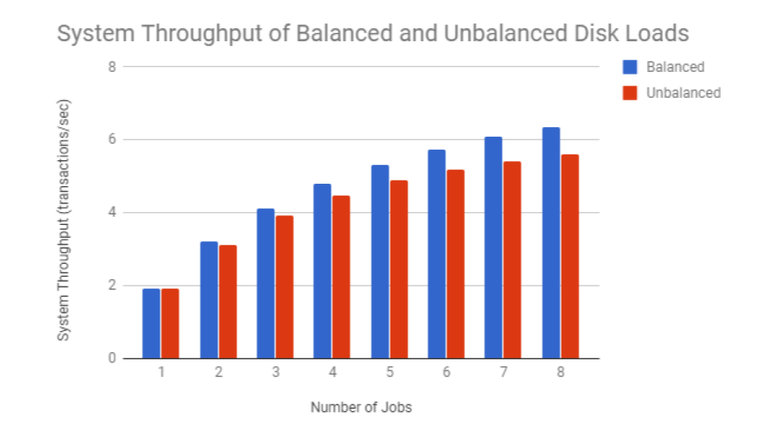

Interactive/Batch System Analysis via Mean Value Analysis C++
Computer Performance Evaluation - San Francisco State University Fall 2016
Get Source Code:
- .zip File: Download
- git url: https://github.com/ddaquiga/interactive-batch-system.git
- git SSH key: git@github.com:ddaquiga/interactive-batch-system.git
In this project, I study the closed batch server system shown below. The system has one processor with average service time Sp = 3ms, and 4 disk units with average service time Sd = 10ms. There are 8 jobs total with the average transaction generates 40 visits to disk units. I calculate the throughput - X (transactions per second), server utilizations - U, queue lengths - Q, and the system response time - R in two cases: when the load is balanced and each disk receives 25% of disk traffic, and when the load is not balanced and the traffic to individual disks is distributed nonuniformly: 40%, 30%, 20%, and 10%. To make these calculations, I developed a program which implements the mean value analysis method.
The table below compares response times of the system with a balanced load and the system with an unbalanced load in relation to the number of jobs in the system. Response times of the balanced system are shorter than the response times of the unbalanced system. The difference between the two increases as more jobs are put in the system.
The next table shows the throughputs of the two systems. The balanced system has a higher throughput than the unbalanced system. The difference between the two also increases as more jobs are put into the system.
I use the mean value analysis method to find X, Q, U, and R of the system. I first examine the system when only one job is active in the system. Using the given demand time for each resource, I calculate the residence time of each resource. Then, using the residence times, I find the response times. Next, with the response times of each resource, I find the throughputs. Finally, I use the residence times and throughputs of each resource to calculate the queue length of each resource.
This process is repeated as another job is added to the system. This time, I calculate the residence time based on the queue lengths from the previous iteration. With these new residence times, I find the response times, throughputs, and queue lengths of each resource when there are two jobs in the system. Using the data from this two-job system, I calculate the data for a three-job system. Then, I use the three-job information to find the four-job information, and so on until I finally have the data for desired number of jobs.
In this code sample, I implement the mean value analysis method iteratively. i represents the number of jobs. j represents the identification number of each resource. residence[i][j] is the residence time of the j'th resource with i jobs in the system. demand[j] is the total demand per transaction (seconds) for the j'th resource. queueLength[i][j] is the queue length of the j'th resource with i jobs in the system. numResources[j] shows the number of copies of the j'th resource. throughput[i] is the throughput of the system with i jobs.
With this program, I can use the mean value analysis method for either interactive or batch systems. Calculations for throughput for interactive systems also involves a user think time. For batch systems, think time is 0.
for (int i = 0; i < max; i++){
//Find Rj(i) = Dj(i)[1+Q(i-1)]
if (i == 0){
for (int j = 0; j < totalResources; j++){
residence[i][j] = demand[j];
}
}
else{
for (int j = 0; j < totalResources; j++){
residence[i][j] = demand[j] * (1 + queueLength[i-1][j]);
}
}
//Find R(i)
for (int j = 0; j < totalResources; j++){
response[i] += residence[i][j] * numResources[j];
}
//Find X(i)
if (mode == 1) throughput[i] = (i+1)/(thinkTime + response[i]);
else throughput[i] = (i + 1)/response[i];
//Find Queue Lengths
for (int j = 0; j < totalResources; j++){
queueLength[i][j] = throughput[i] * residence[i][j];
}
}
Here I use my mean value analysis program to find data for the system when the loads are balanced.
Enter system type:
1 - interactive
2 - batch
2
Enter maximum degree of multiprogramming: 8
Enter total number of resources: 2
Enter resource types:
1: CentralProcessor
2: Disk
Enter number of resources:
1 CentralProcessor: 1
2 Disk: 4
Enter demand per transaction [sec]:
1 CentralProcessor: .120
2 Disk: .100
Maximum degree of multiprogramming is 8
Resource identifier - Resource type, Number of resources, Total demand per trans action[sec]
1 - CentralProcessor, 1, 0.12
2 - Disk, 4, 0.1
System Response Times:
1 - 0.52
2 - 0.624615
3 - 0.729458
4 - 0.834538
5 - 0.939865
6 - 1.04545
7 - 1.1513
8 - 1.25743
System throughput:
1 - 1.92308
2 - 3.20197
3 - 4.11264
4 - 4.79307
5 - 5.31991
6 - 5.73916
7 - 6.08008
8 - 6.36218
Queue lengths:
1 - CentralProcessor:
1 - 0.230769
2 - 0.472906
3 - 0.726904
4 - 0.993261
5 - 1.27248
6 - 1.56505
7 - 1.87149
8 - 2.19227
2 - Disk:
1 - 0.192308
2 - 0.381773
3 - 0.568274
4 - 0.751685
5 - 0.931881
6 - 1.10874
7 - 1.28213
8 - 1.45193
Individual Throughputs -
1 - CentralProcessor:
1 - 8.33333
2 - 13.5417
3 - 16.9732
4 - 19.3024
5 - 20.9038
6 - 22.0024
7 - 22.7416
8 - 23.2168
2 - Disk:
1 - 10
2 - 16.7742
3 - 21.7112
4 - 25.5057
5 - 28.5439
6 - 31.0578
7 - 33.1952
8 - 35.055
Utilitizations -
1 - CentralProcessor :
1 - 0.230769
2 - 0.384236
3 - 0.493517
4 - 0.575168
5 - 0.638389
6 - 0.688699
7 - 0.729609
8 - 0.763462
2 - Disk :
1 - 0.192308
2 - 0.320197
3 - 0.411264
4 - 0.479307
5 - 0.531991
6 - 0.573916
7 - 0.608008
8 - 0.636218
I run the program again, but this time the loads are unbalanced.
$ ./a
Enter system type:
1 - interactive
2 - batch
2
Enter maximum degree of multiprogramming: 8
Enter total number of resources: 5
Enter resource types:
1: CP
2: Disk1
3: Disk2
4: Disk3
5: Disk4
Enter number of resources:
1 CP: 1
2 Disk1: 1
3 Disk2: 1
4 Disk3: 1
5 Disk4: 1
Enter demand per transaction [sec]:
1 CP: .120
2 Disk1: .160
3 Disk2: .120
4 Disk3: .080
5 Disk4: .040
Maximum degree of multiprogramming is 8
Resource identifier - Resource type, Number of resources, Total demand per transaction[sec]
1 - CP, 1, 0.12
2 - Disk1, 1, 0.16
3 - Disk2, 1, 0.12
4 - Disk3, 1, 0.08
5 - Disk4, 1, 0.04
System Response Times:
1 - 0.52
2 - 0.64
3 - 0.763846
4 - 0.891118
5 - 1.02148
6 - 1.15467
7 - 1.29045
8 - 1.42865
System throughput:
1 - 1.92308
2 - 3.125
3 - 3.92749
4 - 4.48874
5 - 4.89485
6 - 5.19631
7 - 5.42446
8 - 5.59971
Queue lengths:
1 - CP:
1 - 0.230769
2 - 0.461538
3 - 0.688822
4 - 0.909683
5 - 1.12171
6 - 1.32301
7 - 1.51213
8 - 1.68806
2 - Disk1:
1 - 0.307692
2 - 0.653846
3 - 1.03927
4 - 1.46461
5 - 1.93022
6 - 2.43621
7 - 2.98233
8 - 3.56799
3 - Disk2:
1 - 0.230769
2 - 0.461538
3 - 0.688822
4 - 0.909683
5 - 1.12171
6 - 1.32301
7 - 1.51213
8 - 1.68806
4 - Disk3:
1 - 0.153846
2 - 0.288462
3 - 0.404834
4 - 0.504475
5 - 0.589135
6 - 0.660611
7 - 0.720633
8 - 0.770803
5 - Disk4:
1 - 0.0769231
2 - 0.134615
3 - 0.178248
4 - 0.211554
5 - 0.237215
6 - 0.257158
7 - 0.272776
8 - 0.285087
Individual Throughputs -
1 - CP:
1 - 8.33333
2 - 13.5417
3 - 17.1053
4 - 19.7376
5 - 21.8186
6 - 23.5659
7 - 25.1111
8 - 26.5379
2 - Disk1:
1 - 6.25
2 - 9.55882
3 - 11.3372
4 - 12.2593
5 - 12.6795
6 - 12.7977
7 - 12.732
8 - 12.5554
3 - Disk2:
1 - 8.33333
2 - 13.5417
3 - 17.1053
4 - 19.7376
5 - 21.8186
6 - 23.5659
7 - 25.1111
8 - 26.5379
4 - Disk3:
1 - 12.5
2 - 21.6667
3 - 29.1045
4 - 35.5914
5 - 41.5427
6 - 47.1955
7 - 52.6915
8 - 58.1181
5 - Disk4:
1 - 25
2 - 46.4286
3 - 66.1017
4 - 84.8718
5 - 103.173
6 - 121.24
7 - 139.203
8 - 157.137
Utilitizations -
1 - CP :
1 - 0.230769
2 - 0.375
3 - 0.471299
4 - 0.538649
5 - 0.587383
6 - 0.623557
7 - 0.650935
8 - 0.671965
2 - Disk1 :
1 - 0.307692
2 - 0.5
3 - 0.628399
4 - 0.718199
5 - 0.783177
6 - 0.831409
7 - 0.867913
8 - 0.895953
3 - Disk2 :
1 - 0.230769
2 - 0.375
3 - 0.471299
4 - 0.538649
5 - 0.587383
6 - 0.623557
7 - 0.650935
8 - 0.671965
4 - Disk3 :
1 - 0.153846
2 - 0.25
3 - 0.314199
4 - 0.3591
5 - 0.391588
6 - 0.415705
7 - 0.433957
8 - 0.447977
5 - Disk4 :
1 - 0.0769231
2 - 0.125
3 - 0.1571
4 - 0.17955
5 - 0.195794
6 - 0.207852
7 - 0.216978
8 - 0.223988